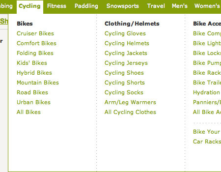

[][]
Son zamanlarda bir çok yerde gözüme çarpan bir menü tipi var; iki kolonlu, üç kolonlu vb. menü tipleri. CSS ile en optimum şekilde bu menüyü nasıl yapabilirim diye araştırdım ve sizlerle paylaşmaya karar verdim. Konuyu inceledikçe çok kolonlu yapıların sadece menülerde değil site içeriklerinde de kullanabileceğimizi gördüm. İlk olarak yapının nasıl olduğunu göstereceğim, sonrada menüde nasıl kullanıldığını.
Web mecrası geliştikçe ihtiyaçlarımızda gelişiyor ve ihtiyaçlarımızı karşılayacak metotlar arıyoruz. Çok kolonlu yapılarda böyle bir metot aslında. Sitemizi kullanan insanlar genelde menü vb. erişim ve gezinti araçlarını kullanarak sitemizi dolaşırlar. Menü gibi gezinti araçları site yapısı düşünüldüğünde sayfamızın en önemli alanlarıdır. Bu alanları en iyi şekilde tasarlanması ve düşünülmesi sitemizi daha kullanışlı ve etkin hale getirecektir.
Bu düşünceler ile bir çok web site geliştiricisi çeşitli yöntemler denedi ve denemeye devam ediyor. Kullanılabilirliği en üst düzeye çıkarmak için çeşitli metotlar üretilmektedir. Bence bunlardan en güzellerinden biridir çok kolonlu menüler.
Yatay ve dikey örneklerimiz olmasına karşın genelde yatay ve üst menüdeki örnekler daha kullanışlıdır. Kullanıcıya uzun menü alanlarına erişebilmek için kaydırma çubuğunu kullanırlar buda bizim için bir dezavantajdır. Çok kolonlu menüler bu gibi durumlardan bizi kurtarır. Sitemizi daha derli toplu gösterir.
Çok kolonlu menü örneklerini incelediğimizde belli başlı 2-3 yöntem ile oluşturulduğunu görürüz. Bunları aşağıda inceleyeceğiz. Projelerimizde çoklu menü kullanmaya karar verdiğimizde hangisi projemize uygun ise onu kullanacağız.
Ayrıca javascript yardımı ile ve css3 yardımı ile de çoklu menü oluşturabiliriz bunlarıda göreceğiz.
Burada anlatacağımız metotlar sadece menülerde kullanılmaz, site içeriğindeki benzer yapılar içinde aynı metotlar kullanılabilir.
1. Yol: float uygulanmış liste ögeleri
Bu yöntemde ul elemanına sabit bir genişlik verip, her bir li elemanına float ve sabit genişlik tanımı yaparak yan yana dizeriz. Çok kolonlu yapılarını oluşturmak için en basit metottur.
Dezavantajı listelemek istediğimiz ögeleri yan yana dizer. Normalde istenen birinci kolonu bitirdikten sonra ikinci kolona geçmesidir.
<ul> <li>Birinci Oge</li>
CSS kodumuz
ul { width: 700px; list-style-type:none; }
li { width:180px; margin:15px 0 0 0; padding:0 10px 0 0; line-height:15px; float:left; }
Örneği görmek için tıklayınız.
700px tüm genişlik içindir her ögenin genişliğini 180px verip bide sağdan 10px padding değeri ile yan yana dizeriz.
Örneği biraz daha geliştirip açılır menü haline getirelim.
HTML Kodu;
<ul id="menu"> <li><a
href="">Tencere
- Birinci Oge
- İkinci Oge .....
- Onuncu Öge
CSS kodu;(kodun uzun olduğuna bakmayın çoğu kod menü elemanlarını daha güzel görünmesini sağlamak için eklenmiştir.) Bunu menüye uygulayalım
ul{margin:0; padding:0; list-style:none} ul
li{float:left; width:180px; border-top:3px solid #fff; position:relative} ul li:hover, ul li.over{border-top:3px solid #C30; background-color:#eee; width:180px;} ul li a{ font:12px "Trebuchet MS", Arial, Helvetica, sans-serif; text-decoration:none; display:block; padding:5px 5px 5px 10px; color:#0657ad; font-weight:bold}
İlk menü öğelerini oluşturduk.
ul li:hover ul, ul li.over
ul{display:block;}
Burada virgülün ilk kısmı ie6 hariç olan kısmı için ie6 için ise aşağıdaki javascript kodunu yazacağız.
Tabi başımızın belası ie6 için menüyü açmak için javascript yardımı almamız gerekiyor. Çünkü ie6 linklerin haricinde :hover işleyişini uygulamıyor
startList = function() { if
(document.all&&document.getElementById) { navRoot = document.getElementById("menu"); for (i=0; i<navRoot.childNodes.length; i++) { node = navRoot.childNodes[i]; if (node.nodeName=="LI") { node.onmouseover=function() { this.className+=" over"; } node.onmouseout=function() { this.className=this.className.replace(" over", ""); } } } } } window.onload=startList;
Açılan menü kısmının tam kapsanması için kapsayamama kodu ekleyeceğiz.
ul li ul:after {content: "."; display:
block; height: 0; clear: both; visibility: hidden;} ul li ul {display: inline-block;} /IE-mac de bu bolumu sakla / * html ul li ul {height: 1%;} ul li ul {display: block;} / IE-mac bu bolumu saklam artik /
Açılacak menü ul sinin tanımlarını yapıyoruz.
ul li ul {width: 580px;
list-style-type:none; display:none; border-bottom:3px solid #C30; background-color:#eee; padding:5px 0 10px 10px; position:absolute;} ul li li {width:180px; margin:5px 0 0 0; padding:0 10px 0 0; line-height:15px; float:left; border:0;} ul li li:hover{border:0} ul li li a{color:#0657ad; text-decoration:underline; padding:0; font-weight:normal} ul li li a:hover{color:#C30; text-decoration:none} ul li ul.kapsulSolda{right:0}
Kolonlama için yukarıdaki yöntemi uyguluyoruz.
Örneği görmek için tıklayınız.
2. metot: Margin yönlendirmeleri ile
Çok kolonlu yapıları oluşturmak için diğer bir yöntemde ikinci ve üçüncü kolonlara sağdan ve üstten margin değerleri vererek yapmaktır. Bu metodun avantajı kolon dizilişinin istediğimiz gibi olmasıdır. Bu metotta çoğaltacağımız kolonlara ek sınıflar eklemeliyiz.
<ul> <li class="kolon1"><a
href="#">Öğe 1
CSS kodumuzu yazalım
ul { margin: 0 0 1em 2em; padding: 0; } ul
li { line-height: 1.2em; margin: 0; padding: 0; } * html ul li { position: relative; } ul li.kolon1 { margin-left: 0em; } ul li.kolon2 { margin-left: 10em; } ul li.kolon3 { margin-left: 20em; } li.sifirla { margin-top: -6em; } ul li a { display: block; width: 7em; text-decoration: none; } ul li a:hover { text-decoration:underline}
Örnek kodu görmek için tıklayınız.
Yukarıdaki kodda ilk li tanımımız bir önceki metot ile neredeyse aynıdır. Tek farklı olan kısım position:relativetanımıdır, bu tanım ie'deki sorunları gidermek için eklenmiştir. Her kolonun soldan mesafesi margin-left değerleri tanımlanarak sağlanmıştır. İkinci ve üçüncü kolonları yukarı çekmek içinde menü yüksekliği kadar eksi margin değeri verilerek yukarı çekilmiştir.
Margin yönlendirmeleri ile menü oluşturmak pek mantıklı değildir. Esnek olmayan bu yöntem menü ekleme ve çıkarmalarında osurn çıkarır.
3. Metot: Kapsayıcı katman ile bölmek
Bu metotta çoklu kolonlara ayrılacak listeler kapsayıcı katmanlar ile ayrılarak her bir kolon oluşturulur. Bu metotta yükseklik ile ilgi bir şey yapmaya gerek yoktur ve esnek bir yapıya sahiptir.
<div class="licol"> <ol> <li>Let me
not to the marriage of true minds
Yorumlar !